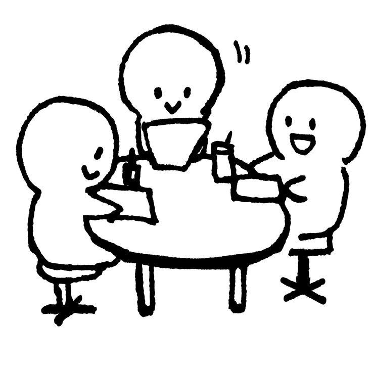
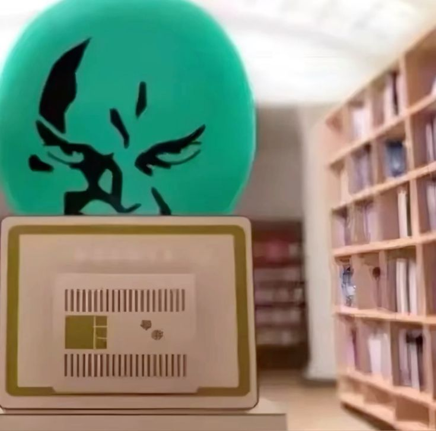
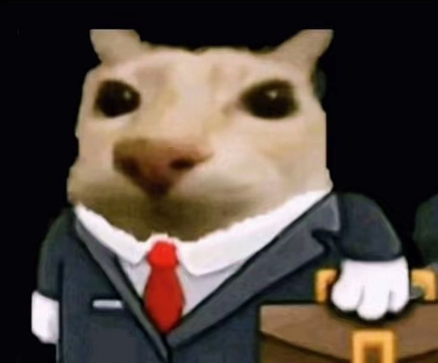

El Ambiente
Lo mejor de estar aquí es la gente. Te rodeas de compañeros súper habilidosos que tienen tus mismas metas y gustos . No estás solo frente a la pantalla; aquí encuentras amigos que te ayudan a pensar y a resolver esos problemas complejos de clase. Es una comunidad donde el conocimiento se comparte y los retos se superan en equipo.

Tips y Nuevos Conocimientos
Aprendes cosas que la mayoría de los alumnos ni se imagina. Vas mucho más allá de "picarle a los botones": entiendes la lógica de las bases de datos, aprendes a sacarle el jugo real a la ofimática y, lo mejor de todo, descubres cómo crear y personalizar tu propia página web. Pasas de ser un espectador a ser un creador digital.

La realidad de la Computadora
Aquí aprendes una gran verdad: las computadoras no son inteligentes. Son solo cajas rápidas. Los verdaderos inteligentes son los usuarios que las programan y les dan órdenes. Al entender cómo funcionan por dentro, dejas de verlas como cajas misteriosas y empiezas a verlas como herramientas que tú controlas totalmente.

El Plus Profesional
Si te lo propones, puedes ganar una Cédula Profesional como Técnico en Computación. Pero no es solo el papel: son los contactos que haces para tu futura carrera y las prácticas profesionales que te dan experiencia real. Es la oportunidad perfecta para empezar tu vida laboral con ventaja y una red de contactos que te servirá por años.
